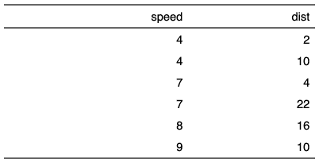

| set_table_properties {flextable} | R Documentation |
Set table layout and table width. Default to fixed algorithm.
If layout is fixed, column widths will be used to display the table;
width is ignored.
If layout is autofit, column widths will not be used; table width is used (as a percentage).
set_table_properties(x, layout = "fixed", width = 0)
x |
flextable object |
layout |
'autofit' or 'fixed' algorithm. Default to 'autofit'. |
width |
The parameter has a different effect depending on the output format. Users should consider it as a minimum width. In HTML, it is the minimum width of the space that the table should occupy. In Word, it is a preferred size and Word may decide not to strictly stick to it. It has no effect on PowerPoint and PDF output. Its default value is 0, as an effect, it only use necessary width to display all content. It is not used by the PDF output. |

PowerPoint output ignore autofit layout.
Other flextable dimensions:
autofit(),
dim.flextable(),
dim_pretty(),
fit_to_width(),
flextable_dim(),
height(),
hrule(),
ncol_keys(),
nrow_part(),
width()
library(flextable) ft_1 <- qflextable(head(cars)) ft_2 <- set_table_properties(ft_1, width = .5, layout = "autofit") ft_2